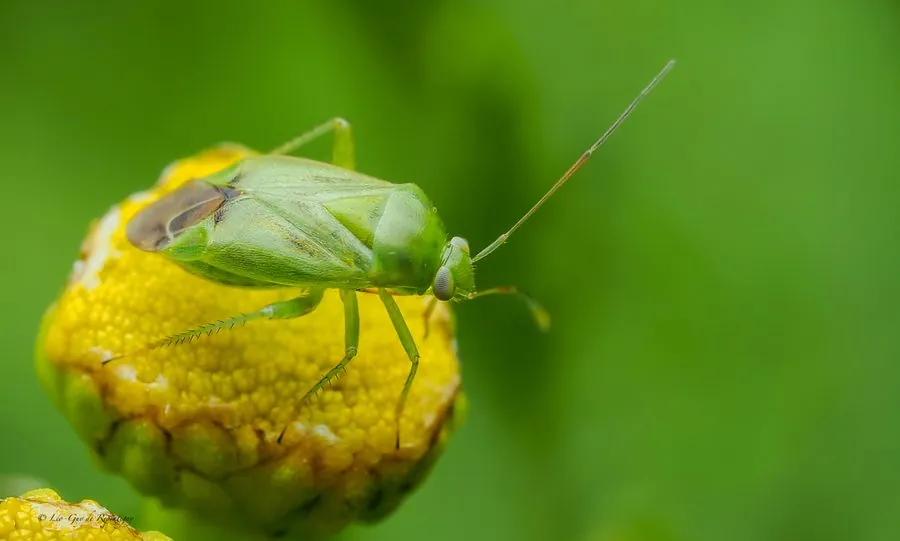

昆虫 · 动物界
绿盲蝽 Apolygus lucorum

体绿色的小型盲蝽，刺吸棉花、果树和蔬菜的嫩芽和花蕾，造成破叶和落蕾，是重要的农业害虫。
- 分类
- 门节肢动物门纲昆虫纲目半翅目科盲蝽科属绿盲蝽属
- 栖息环境
- 棉田、果园、菜地和茶园，在嫩芽和花蕾上活动
- 地理分布
- 中国大部分地区，以及日本、朝鲜半岛
- 保护级别
- 暂无评估；重要农业害虫
物种志
绿盲蝽成虫体长约 5 mm，体绿色或黄绿色，身体椭圆形，触角细长，前翅革质部分绿色，膜质部分半透明。若虫体绿色，行动活泼，受惊时迅速爬走。它属于盲蝽科，口器为刺吸式。
它主要危害棉花、果树、蔬菜和茶树等作物，成虫和若虫刺吸嫩芽、嫩叶、花蕾和幼果的汁液，造成叶片破损、皱缩、落蕾落果，严重影响产量和品质。绿盲蝽一年发生多代，以卵在植物组织内越冬，在棉花和果园中危害较重。防治以清除田间杂草、保护天敌、监测虫情和科学用药为主，在若虫低龄期施药效果最好，避免在花期大量使用广谱杀虫剂，以保护传粉昆虫。
形态与习性
- 食性成虫和若虫刺吸嫩芽、花蕾和幼果汁液
- 体长约 5 mm
- 识别体绿色或黄绿色，身体椭圆形，触角细长
- 危害造成叶片破损、落蕾落果
- 防治清除杂草、保护天敌、监测虫情和科学用药
趣味知识
- 绿盲蝽个头很小，却能让棉花和果树大量落蕾。
- 它用刺吸式口器吸食嫩芽和花蕾的汁液。
- 在若虫低龄期用药，防治绿盲蝽的效果最好。